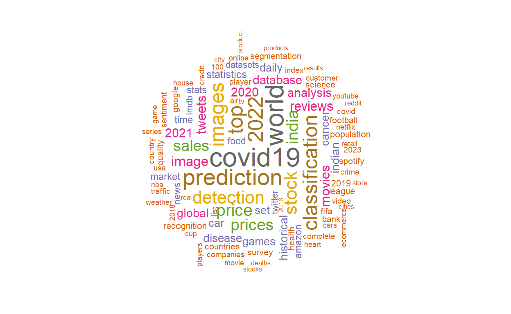
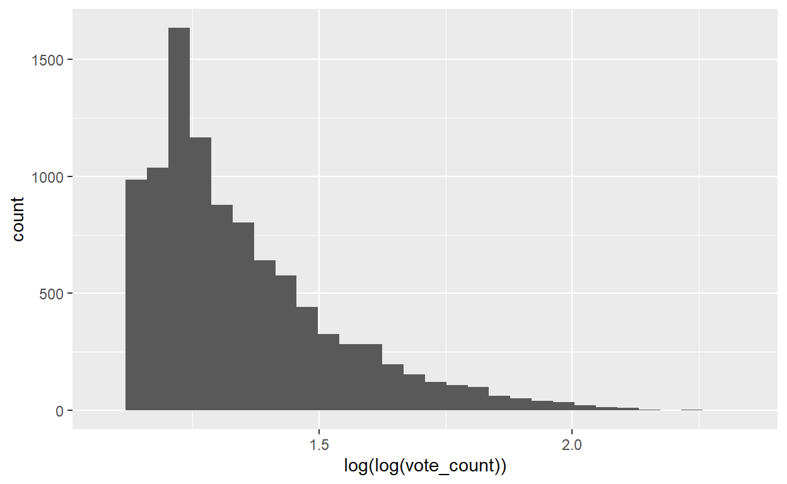

So You Took A Class With Bradford?
You made a wise choice. The freedom to learn in ways that suit you best is what has made the courses I have taken with Bradford some of my favorites at GVSU. It is difficult to know as you plan for the end of a semester what a satisfactory project could look like. What does it mean to demonstrate the course objectives? How do you take these little chunks of knowledge you have mined and refine that into a finished product? Most importantly, what will you wear?
Concocting A Project
Where To Start
While the stated purpose of this end of semester project is to demonstrate mastery of the course objectives, my approach is to start with a question I want to answer. Question in hand, I then reflect on whether the tools I am expected to understand are suited to answering my question. In the case of this course as taught in Winter 2023, the course objectives include:
- Describe probability as a foundation of statistical modeling, including inference and maximum likelihood estimation
- Determine and apply the appropriate generalized linear model for a specific data context
- Conduct model selection for a set of candidate models
- Communicate the results of statistical models to a general audience
- Use programming software (i.e., R) to fit and assess statistical models
We would be looking for questions which lend themselves well to Generalized Linear Models. This is a broad family of models, so most questions are going to be on the table. The important caveat is even with an interesting question and a rough idea of how you can use the required tools, you still need sufficient data.
Data Sourcing
“The journey of one-thousand records begins with a single
several queries.”
It is unlikely that you will find the exact data you want on the first try or in a single, neatly packaged repository. You may need to pull data from multiple sources and will almost certainly have to preprocess your data. Why bother with this when you could find neatly packaged datasets all over the internet?
If you find yourself working with data that you did not need to preprocess, you are probably not answering a very original question. I would love to see what you might be able to contribute to the wealth of analyses on Titanic data. The reason to ask questions which require elbow grease to find data for is that in preprocessing, you will spend a great deal of time coming to understand your data and the models you are investigating. Checking that your data satisfies model assumptions and that any kinds of test, validate, and train splits you construct are appropriate are great ways to communicate the understanding required by the course objectives.
Assuming you agree, even begrudgingly, you might wonder where you could find data? This depends on your question but here are some great resources:
- Kaggle - Good for finding less raw data or looking at data sources used to generate the datasets
- US Gov Data - A huge directory of government produced data
- Open Data Network - A nice search engine for opensource datasets
You can find data all over the place, but I like the above resources as a starting point for their generality and ease of use.
Example Project Idea
Concoting An Example Project
Allow me to peel back the curtain a bit and explain that this
tutorial is itself a final project for Bradford’s STA 631 course.
Extremely meta, I know. I was following the same process I shared and my
initial question was, “How likely am I to have unsubscribed from an
email list after I am no longer interested in it?” I have had the same
gmail account since 2010 (joeyfahnestock@gmail.com hit me up with cat memes) and
it currently has over 46,414 unread messages. I am not an inbox zero
person. Pulling down and working with such a large dataset proved
difficult. There was a lot of text processing and it seemed that the
gigabytes of email data was a little much for my machine. I decided
instead that I would make a tutorial on creating a project to learn more
about learnr and to engage with the course community.
To add a layer to the metatextual nature of this document, my example project will answer the question, “What data do people analyze?”
Data Sourcing
“What data do people analyze?” is an extremely broad question which leads to an important aspect of creating a final project. The question you start with needs to be iterated on to enable you to answer it. Ideally, you start with a broad question and fight reality to maintain the original scope of the question, only qualifying it when necessary. It would be a lengthy task trying to source enough analyses and datasets to answer the broad form of this question. I will make the small qualification that I want to know, “What data do people create datasets on Kaggle to analyze?”
This is still a broad question with rich paths to investigate, but data sourcing is now much more straightforward. Kaggle has a great API for developers to interface with According to Kaggle there are 215,260 public datasets. The Kaggle API returns 20 records per call, so I wrote this small python script to convert the paginated data into one big CSV. In tinkering, I discovered that Kaggle maxes out the pages you can view from their server side code to 500. Their API also lets you sort the datasets by some predefined metrics, and I decided to sort by the most upvoted as these are likely the most analyzed datasets on Kaggle.
import pandas as pd
import kaggle
kaggle.api.authenticate()
print("API REQUESTS BEGINNING")
try:
for i in range(1, 501):
for dataset in kaggle.api.dataset_list(page = i, sort_by="votes"):
datasets.append(dataset)
except kaggle.rest.ApiException:
print(len(datasets)//20)
fields = [
'ref', 'title', 'size', 'lastUpdated', 'downloadCount',
'voteCount', 'usabilityRating'
]
print("API REQUESTS COMPLETE")
print("DATAFRAME CREATION")
dataset_fp = pd.DataFrame([[getattr(i, f) for f in fields] for i in datasets], columns=fields)
print("DATAFRAME CREATED")
print("WRITE OUT")
dataset_fp.to_csv("kaggle.csv.zip", index=None, compression="zip")
print("WRITE COMPLETE")
print("Goodbye!")We can read the data into R and take a peek at the data which will NEED some preprocessing.
library("readr")
kaggle_data_raw = read_csv("kaggle.csv.zip")
head(kaggle_data_raw)With nearly, ten thousands rows there is bound to be something
interesting to find. The ref column seems to just be the
username and dataset title combined, so we can probably drop that column
and the other columns will need to be processed to be more usable in an
analysis.
Creating A Plan To Align Your Project With Course Objectives
In general, the ideal way to construct a project is to discuss:
- The motivating question in an introduction
- The sources you used to produce the data
- Cleaning conducted on the data
- Exploratory analyses
- Modeling steps
- A conclusion that answers your question
This is better practice than listing out the individual course objectives and trying to hit each of them individually. Adding a reflection to your project report would allow you to point out the specific portions of your work that show you have met the objectives. This being a project within a project about how to do projects allows me some wiggle room to gracefully point out how I am meeting the course objectives without needing a reflection.
The Plan
The above is a good skeleton for a project report, but the actual process of analysis is more of an iterative loop:
- Explore the data and make a hypothesis
- Model the data to test our hypothesis
- Reflect on whether the model provides a believable answer to our question
These steps encapsulate a messier combination of cleaning, analyzing, testing, and reworking our question when needed. I am going to pare away some of these less fruitful iterations I went through for the sake of brevity and show three iterations for my example project, but take my word that depending on how you count it I went through dozens.
Example Project: Iteration 0
Exploring Uncharted Territory
With our plan in hand, let’s start with the more obvious preprocessing steps and exploratory analyses. For a refresher our data looks like this:
head(kaggle_data_raw)We need to have the data in a format that’s usable and we do not need to retain duplicate data. We can see that some needed steps include:
refcan be dropped as it duplicates thetitlecolumntitlewill have only alphanumeric characters retained and making all letters lowercase to standardize the stringssizeneeds to be converted to a standard unit of bytes so that the column can just be an integer rather than a stringlastUpdatedcan be converted from a datetime object to how many days before the date they were accessed (April 27, 2023) so we have a column of integersdownloadCount,voteCount, andusabilityRatingwill be left alone until we do some exploration
library(dplyr) # Grammar for data transformation
library(stringr) # String manipulation tool
library(lubridate) # Datetime convenience library
unique(str_replace_all(kaggle_data_raw$size, "[^\\P{Nd}]", "")) # Show how big files can get## [1] "KB" "GB" "MB" "B"kaggle_cleaned = kaggle_data_raw %>%
select(-ref) %>%
mutate(title = str_remove_all(title, "[^[:alnum:]^[:space:]]") %>% tolower()) %>%
mutate(size = case_when(
str_detect(size, "KB$") ~ str_replace(size, "KB$", "") %>% as.numeric() * 1024,
str_detect(size, "MB$") ~ str_replace(size, "MB$", "") %>% as.numeric() * 1024^2,
str_detect(size, "GB$") ~ str_replace(size, "GB$", "") %>% as.numeric() * 1024^3,
str_detect(size, "B$") ~ str_replace(size, "B$", "") %>% as.numeric(),
TRUE ~ NA_real_
)) %>%
mutate(last_updated = -difftime(ymd_hms(lastUpdated),
ymd("2023-04-27"),
units="days") %>% as.numeric()) %>%
rename(download_count = downloadCount,
vote_count = voteCount,
usability_rating = usabilityRating) %>%
select(title, size, last_updated, download_count, vote_count, usability_rating)
head(kaggle_cleaned)True to my pythonic ways, I snuck in changing all the multi-word column names to snake case. The data looks much cleaner for some exploratory analysis. Analyses can be visual, statistical, or both. For the titles, I am going to use a word cloud to identify any especially common words in our data.
library(tidytext) # tokenize (split up) strings for us
library(wordcloud) # create word clouds
title_words = kaggle_cleaned %>%
unnest_tokens(word, title)
title_word_freq = title_words %>% count(word, sort = TRUE)
wordcloud(words = title_word_freq$word,
freq = title_word_freq$n,
scale = c(5, 0.5),
min.freq = 1,
max.words = 100,
random.order = FALSE,
rot.per = 0.3,
colors = brewer.pal(10, "Dark2"))This is pretty cool except that the most common words are “dataset” and “data” along with stop words like “the” which are not super useful for our brainstorming. Let’s remove the stop words and the words “data” and “dataset” explicitly from our analysis and try again.
title_words = kaggle_cleaned %>%
mutate(title = str_remove_all(title, "\\bdata\\b")) %>%
mutate(title = str_remove_all(title, "\\bdataset\\b")) %>%
unnest_tokens(word, title) %>%
anti_join(stop_words)
title_word_freq = title_words %>% count(word, sort = TRUE)
wordcloud(words = title_word_freq$word,
freq = title_word_freq$n,
scale = c(2, 0.25),
min.freq = 1,
max.words = 100,
random.order = FALSE,
rot.per = 0.3,
colors = brewer.pal(10, "Dark2"))
Now we are talking! The saturation of Covid analyses abides. I hope it is different for you dear reader of the future. We also see “classification”, “detection”, and “prediction” rank pretty highly suggesting that a lot of these datasets were created with a specific kind of analysis in mind.
Let’s do some standard statistical analyses on our numeric columns.
library(skimr) # Tidy summary stats
kaggle_cleaned %>%
select_if(is.numeric) %>%
skim()| Name | Piped data |
| Number of rows | 9991 |
| Number of columns | 5 |
| _______________________ | |
| Column type frequency: | |
| numeric | 5 |
| ________________________ | |
| Group variables | None |
Variable type: numeric
| skim_variable | n_missing | complete_rate | mean | sd | p0 | p25 | p50 | p75 | p100 | hist |
|---|---|---|---|---|---|---|---|---|---|---|
| size | 0 | 1 | 755158581.39 | 5.600048e+09 | 0.00 | 44544.00 | 1048576.00 | 51380224.00 | 3.972845e+11 | ▇▁▁▁▁ |
| last_updated | 0 | 1 | 879.43 | 6.668000e+02 | -0.91 | 291.28 | 757.45 | 1325.88 | 2.543370e+03 | ▇▅▃▂▂ |
| download_count | 0 | 1 | 4742.69 | 1.725977e+04 | 0.00 | 558.00 | 1288.00 | 3192.50 | 5.221360e+05 | ▇▁▁▁▁ |
| vote_count | 0 | 1 | 100.25 | 4.357600e+02 | 21.00 | 29.00 | 39.00 | 67.00 | 3.128700e+04 | ▇▁▁▁▁ |
| usability_rating | 0 | 1 | 0.82 | 2.100000e-01 | 0.00 | 0.74 | 0.88 | 1.00 | 1.000000e+00 | ▁▁▁▂▇ |
skimr is so nice. Make sure to highlight your way over
if you don’t see a slider bar to see the little histogram it generates.
We have no missing values, but there is some clear evidence of skewing
in all of our columns. Let’s make some histograms to see that more
explicitly.
library(ggplot2)
ggplot(kaggle_cleaned, aes(size)) + geom_histogram()ggplot(kaggle_cleaned, aes(last_updated)) + geom_histogram()ggplot(kaggle_cleaned, aes(download_count)) + geom_histogram()ggplot(kaggle_cleaned, aes(vote_count)) + geom_histogram()
ggplot(kaggle_cleaned, aes(usability_rating)) + geom_histogram()We can confirm the significant skew we saw in the skimr
output with all but usability_rating having right skews and
usability_rating having a left skew. We will need to keep
that in mind when we start modeling as we will likely have to transform
the data to fit a GLM model.
This takes us to the important step of what we want to hypothesize as
an answer to our question. Keeping in mind our broad goal, “What data do
people create datasets on Kaggle to analyze?” We might consider naively,
for the sake of our overarching pedagogical goals, that the columns need
no further preprocessing. We will just fit the full model taking
votes as the response. Our hypothesis would be, “A dataset
which people want to analyze on Kaggle will have a high number of
upvotes and we can predict those upvotes using the other data provided
with the API responses listing datasets.”
Naive Bayes Modeling. Hold The Bayes.
We have made our decisions and chosen our model, sort of. We know it
needs to be a Generalized Linear Model, and I assume that by the end of
this course you are aware that GLMs require a linking function depending
on the model design. In our case, we have a categorical predictor
title and four numerical predictors. If we want to model
vote_count as the response, we could use gamma regression
which is used for modeling positive, continuous responses with heavy
right skew. Our vote_count model checks all the boxes
except it is skewed to the left. We could try to finesse it a
bit, but the better model to use while still being a little naive is the
negative-binomial distribution regression. We can use
tidymodels to make the setup of our train and test split
and cross validation more straight forward.
library(tidymodels) # Simplify model design specifications
library(parsnip)
library(MASS)
set.seed(42723) # Ensure you see the same "random" results I do
split_idx = initial_split(kaggle_cleaned)
# Test / Train split
kaggle_train = training(split_idx)
kaggle_test = testing(split_idx)
# Get an estimate of theta
estimate_theta_mod = glm.nb(vote_count ~ ., data=kaggle_train, maxit=10)
# Define the recipe
nb_recipe = recipe(vote_count ~ ., data = kaggle_train) %>%
step_dummy(all_nominal_predictors()) %>%
step_zv(all_predictors()) %>%
step_scale(all_predictors()) %>%
step_center(all_predictors())
# Define the model specification
nb_spec = linear_reg() %>%
set_engine("glm", family = negative.binomial(estimated_theta_mod$theta), control = list(maxit = 10)) %>%
set_mode("regression")
# Combine the recipe and model specification into a workflow
nb_wf = workflow() %>%
add_recipe(nb_recipe) %>%
add_model(nb_spec)
# Fit the model using cross-validation
cv_results = nb_wf %>%
fit_resamples(
resamples = vfold_cv(kaggle_train, v = 5),
metrics = metric_set(rmse, rsq),
control = control_resamples(save_pred = TRUE)
)
# Extract the best model and re-fit it on the full training set
best_model = select_best(cv_results, "rmse")
final_fit = best_model$workflow %>% fit(data = kaggle_train)
# Use the model to predict on the test data
pred = final_fit %>% predict(kaggle_test)
# Evaluate the model's performance
metrics(pred, truth = kaggle_test$vote_count)This model is not going to work. My computer is fighting for its
life. With only 10 iterations of glm.nb towards an estimate
of the dispersion parameter, it is unlikely that it was a great
estimate. Even with only ten iterations I could not execute. This is
largely do to our mishandling of our categorical variable and a bit to
do with the overdispersion in our numerical data.It’s also because of
the size of our dataset and the Maximum Likelihood Estimation being used
to optimize the dispersion parameter. We can do better with some more
well thought out preprocessing. Let’s do another iteration with
feeling!
Reflection On Iteration 0
Yes, I do think I have a good grasp on the following:
- Describe probability as a foundation of statistical modeling, including inference and maximum likelihood estimation
- Determine and apply the appropriate generalized linear model for a specific data context
- Conduct model selection for a set of candidate models
- Communicate the results of statistical models to a general audience
- Use programming software (i.e., R) to fit and assess statistical models
The first iteration alone showed my grasp of probability as a
foundation of statistical modeling. Why cross-validate? Why give up on
trying to make glm.nb work? I understand that MLE required
to regress an optimal value of the dispersion parameter is a series of
matrix multiplication which even in the best case is bounded by
dimensions of our model design matrix. With a categorical variable that
consists of around 10,000 unique values that will lead inevitably to a
slow, cumbersome calculation which makes any normal computer sound like
a boxfan.
The negative binomial regression is appropriate for right skewed data which is overdispersed but does not have an excess of zero values. It is just tough to fit without some additional adjustments.
The cross validation method is one way to conduct model selection by training on different resamplings of a train split and choosing optimal coefficients. There are further ways to conduct hyperparameter tuning which is not happening with our current design matrix.
I like to think that while I have not provided results yet this model was interesting to see and I am communicating in a way that is effective even for a general audience. The results of the exploratory analysis having visual components is important to have an audience actually pay attention.
I definitely need to have a model that works for the final bullet but we are getting there.
Example Project: Iteration 1
Let’s set some goals here. We need to simplify our categorical variable–a lot. We need to consider ways to also simplify our numerical variables. If we can, an ideal plan of action would be a model which also has more chance of running with more intensive model selection methods. We will begin with some further exploratory analysis and cleaning
Exploring Calmer Waters
Let’s start with the beefier of the two problems. How do we wrangle
our categorical variable into something actually usable? We need to (not
being facetious) categorize it. Meaning that we need to find some way to
process the records and assign them to one of n categories
where n is significantly smaller than 10,000. I think
ideally less than ten. To do this, I am going to flex some NLP muscle a
bit. The other option would be to use some simpler text processing and
similarity methods, but why do that when I could ask my friend BERT?
# Retrieved in part from https://www.kaggle.com/code/pehahn/basic-bert-with-r/script
reticulate::py_install('transformers', pip = TRUE)
transformer = reticulate::import('transformers')
tf = reticulate::import('tensorflow')
builtins = reticulate::import_builtins() #built in python methods
tokenizer = transformer$AutoTokenizer$from_pretrained('cardiffnlp/tweet-topic-21-multi')
model = transformer$TFAutoModelForSequenceClassification$from_pretrained('cardiffnlp/tweet-topic-21-multi')
class_mapping = model$config$id2label
text = kaggle_cleaned$title
tokens = tokenizer(text, truncation=TRUE, padding=TRUE,max_length=250L, return_tensors="tf")
results = model(tokens)
numpy = reticulate::import("numpy") # More python
scipy.special = reticulate::import("scipy.special") # More python
scores = numpy$array(results$logits) # Create an array from tensorflow object
write_csv(scores, "scores.csv") # Write to a csv to prevent needing to rerun modelreticulate::py_install('scipy', pip = TRUE) # Setup some python utilities
numpy = reticulate::import("numpy") # More python
scipy.special = reticulate::import("scipy.special") # More python
class_mapping = c("arts_&_culture","business_&_entrepreneurs","celebrity_&_pop_culture",
"diaries_&_daily_life","family","fashion_&_style","film_tv_&_video",
"fitness_&_health","food_&_dining","gaming","learning_&_educational",
"music","news_&_social_concern","other_hobbies","relationships",
"science_&_technology","sports","travel_&_adventure","youth_&_student_life")
scores = as.data.frame(read_csv("scores.csv", col_types="dd"))
expit_scores = 1/(1 + exp(-scores)) # Convert scores to probabilities via expit function
score_predictions = as.data.frame(expit_scores >= 0.5) # Use a threshold of 0.5 confidence to assign class
select_class = function(mask, classes) {
ifelse(sum(unlist(mask))>0, unlist(classes[mask][1]), "No Class")
}
pred_classes = unlist(apply(score_predictions, 1, select_class, classes=class_mapping))
kaggle_cleaned$title_class = pred_classes
head(kaggle_cleaned)Whoa! What just happened and who is BERT? BERT is a bidirectional
encoder representation from transformers. It is an incredible natural
language processing model and we used a pretrained
model from HuggingFace’s community. It was originally trained to
classify the topic of tweets with a corpus of over 11000 tweets used to
tune another model, TimeLMs, which was trained on over 124 million
tweets. All that going on and it still was able to run when
glm.nb would not! That’s because throughout I used
reticulate to make calls to some deep learning and numerics
libraries which were able to nearly blow up my computer by maxing out
CPU utilization. It was scary to watch. The result is not flawless
though. Let’s explore our transformed data some more to see what else we
might need to do.
title_class_bars = kaggle_cleaned %>%
select(title_class) %>%
group_by(title_class) %>%
count() %>%
mutate(class_count = n) %>%
select(title_class, class_count) %>%
arrange(desc(class_count))
ggplot(data=title_class_bars, aes(x=reorder(title_class,class_count),
y=class_count, fill=title_class)) +
geom_bar(stat="identity") +
xlab("title_class") +
theme(axis.text.x = element_blank(),
axis.ticks.x = element_blank(),
legend.key.height = unit(0.45,'cm'),
legend.text = element_text(size=8))+
scale_fill_discrete(breaks=levels(with(title_class_bars,
reorder(title_class, class_count))))With this chart, it’s clear that a good portion of the data did not
get classified. With almost 2000 of our under 10000 records, we have to
decide how to handle this missing data. For now, I think we can again
drop it (naively). Let’s try to clean up our numerical data. We have a
lot of numerical data where the specific value doesn’t really matter as
much as its rough grouping. Is it very usable data? Is it a low number
of votes? We can create ordinal categorical variables to simplify some
of our modeling. Looking back at our project goal, we might think that
the main point of using vote_count is to measure
popularity. Why not split vote_count up into popular and
unpopular categories like the social hierarchy of a high school in a
coming of age film.
library(janitor)
ggplot(kaggle_cleaned, aes(vote_count)) + geom_histogram()ggplot(kaggle_cleaned, aes(log(vote_count))) + geom_histogram()ggplot(kaggle_cleaned, aes(log(log(vote_count)))) + geom_histogram()
ggplot(kaggle_cleaned, aes(sqrt(vote_count))) + geom_histogram()MASS::boxcox(kaggle_cleaned$vote_count ~ 1)
lambda_loglik = MASS::boxcox(kaggle_cleaned$vote_count ~ 1)lambda = lambda_loglik$x[which.max(lambda_loglik$y)]
ggplot(kaggle_cleaned, aes((vote_count^lambda - 1)/lambda)) + geom_histogram(bins=30) +
xlab("BOXCOX(vote_count, lambda = -1/90)")ggplot(kaggle_cleaned, aes(qnorm((ifelse(rank(vote_count)/length(vote_count) == 1,
(rank(vote_count) - 1)/length(vote_count),
rank(vote_count)/length(vote_count))))))+
geom_histogram() +
xlab("Quantile Transformation(vote_count)")kaggle_cleaned$vote_count_std = qnorm((ifelse(
rank(kaggle_cleaned$vote_count)/length(kaggle_cleaned$vote_count) == 1,
(rank(kaggle_cleaned$vote_count) - 1)/length(kaggle_cleaned$vote_count),
rank(kaggle_cleaned$vote_count)/length(kaggle_cleaned$vote_count))))
kaggle_cleaned = kaggle_cleaned %>%
mutate(popularity = ifelse(vote_count_std > mean(vote_count_std),
"Popular",
"Not Popular")) %>%
select(-vote_count_std)
kaggle_cleaned %>%
tabyl(title_class, popularity) %>%
adorn_percentages("row") %>%
adorn_pct_formatting(digits = 2) %>%
adorn_ns()We tried some different ways to remove the skew from our data but
eventually we just coerced it to a normal distribution to split it
apart. The resulting popularity column can be seen in the
cross-table to be pretty evenly split across all title classes other
than where we have sparse data. Let’s suppose again that we can naively
fit a model of popularity as we have built it. What would
our hypothesis be?
I would hypothesize that people creating Kaggle datasets that are larger, more usable, and that the topic plays an important role in determining popularity. I think the recency of an update is less important and I think that downloads may be explored as a possible second response variable.
Modeling Coin Tosses But Make It Cool
We have walked our way into a logistic regression which should be interesting to conduct. We have a binary response, one nominal predictor, and two numerical predictors we want to use. Let’s put together a model workflow and see what we can see!
library(tidymodels)
# Pulling from https://www.tidymodels.org/start/case-study/
set.seed(42723)
splits = initial_split(kaggle_cleaned)
kaggle_other = training(splits)
kaggle_test = testing(splits)
val_set = validation_split(kaggle_other,
prop = 0.80)
lr_mod = logistic_reg(penalty = tune(), mixture = 1) %>%
set_engine("glmnet")
lr_recipe = recipe(popularity ~ title_class + size + usability_rating, data = kaggle_other) %>%
step_dummy(all_nominal_predictors()) %>%
step_zv(all_predictors()) %>%
step_normalize(all_predictors())
lr_workflow = workflow() %>%
add_model(lr_mod) %>%
add_recipe(lr_recipe)
lr_reg_grid = tibble(penalty = 10^seq(-4, -1, length.out = 30))
lr_reg_grid %>% top_n(-5)lr_reg_grid %>% top_n(5)lr_res = lr_workflow %>%
tune_grid(val_set,
grid = lr_reg_grid,
control = control_grid(save_pred = TRUE),
metrics = metric_set(roc_auc))
lr_plot =
lr_res %>%
collect_metrics() %>%
ggplot(aes(x = penalty, y = mean)) +
geom_point() +
geom_line() +
ylab("Area under the ROC Curve") +
scale_x_log10(labels = scales::label_number())
lr_plottop_models <-
lr_res %>%
show_best("roc_auc", n = 15) %>%
arrange(penalty)
top_modelslr_best =
lr_res %>%
collect_metrics() %>%
arrange(penalty) %>%
slice(15)
lr_bestlr_auc = lr_res %>%
collect_predictions(parameters = lr_best) %>%
roc_curve(popularity, .pred_Popular) %>%
mutate(model = "Logistic Regression")
autoplot(lr_auc)This is an incredibly bad result. It suggests that our data has no power to predict the popularity of a dataset from the title classes, usability ratings, and size of the data. This can be seen by how closely our model follows the “no-skill” line which reflects the cut off for a model to perform better than guessing at random. We are on to something though with our response and categorical vectors being more manageable. Now the question is finding the right model which calls for some further exploration in a final iteration.
Reflecting On Iteration 1
I was able to better show my understanding of GLMs and some powerful
model fitting techniques in tidymodels. The weakest point
(intentionally) so far has been my exploratory analysis. With it being
loosely put together, I am running into data quality issues that are
inhibiting an otherwise interesting model. I think the NLP application
is fun, but it is more of a narrative device to show that bigger hammers
won’t help you screw something in. I think that this is the broader
message of the course objectives. A statistician should know what tool
to use in which situation with some expected effect. I think we can
squeeze something more useful out of this model in a final iteration
through proper preprocessing.
Example Project Iteration 2
I Came Here To Clean Data And Chew Gum And I Am All Out Of Gum
Hello summary my old friend.
summary(kaggle_cleaned$size)## Min. 1st Qu. Median Mean 3rd Qu. Max.
## 0.000e+00 4.454e+04 1.049e+06 7.552e+08 5.138e+07 3.973e+11This is a great example of a simple tool and common sense can improve models. What would it mean for a dataset with a zero byte size file to be popular? I don’t know but in our model it is going to mean nothing.
kaggle_cleaned = kaggle_cleaned %>% filter(size != 0)
summary(kaggle_cleaned$size)## Min. 1st Qu. Median Mean 3rd Qu. Max.
## 2.200e+01 4.710e+04 1.049e+06 7.601e+08 5.243e+07 3.973e+11The zeros are gone and investigating some of the other small values like 4906 reveals small but relevant zipped datasets. The next common check is the distribution of the data. We have already looked at it, but let’s look again along with some typical transformations of skewed data. We will also investigate the outliers in the data using a boxplot.
ggplot(data=kaggle_cleaned, aes(y=size)) + geom_boxplot()ggplot(kaggle_cleaned, aes(size)) + geom_histogram()ggplot(kaggle_cleaned, aes(log(size))) + geom_histogram()ggplot(kaggle_cleaned, aes(log(log(size)))) + geom_histogram()ggplot(kaggle_cleaned, aes(sqrt(size))) + geom_histogram()kaggle_cleaned$lgsize = log(kaggle_cleaned$size)
ggplot(data=kaggle_cleaned, aes(y=lgsize)) + geom_boxplot()We can see that log(size) looks normally distributed and
when we use lgsize in a boxplot the data goes from being
nearly all outlier to there being no outliers. We can do a similar
analysis for usability_rating only we’ll want only
usability that is great than 0.5 or indicating it’s likely to be
usable.
summary(kaggle_cleaned$usability_rating)## Min. 1st Qu. Median Mean 3rd Qu. Max.
## 0.0000 0.7353 0.8824 0.8234 1.0000 1.0000kaggle_cleaned = kaggle_cleaned %>% filter(usability_rating > 0.5)
summary(kaggle_cleaned$usability_rating)## Min. 1st Qu. Median Mean 3rd Qu. Max.
## 0.5294 0.7941 0.9375 0.8788 1.0000 1.0000This has removed our zeros, but let’s look at some histograms to see how the data is distributed.
ggplot(kaggle_cleaned, aes(usability_rating)) + geom_histogram(bins=15)ggplot(kaggle_cleaned, aes(log(usability_rating))) + geom_histogram(bins=15)ggplot(kaggle_cleaned, aes(sqrt(usability_rating))) + geom_histogram(bins=15)None of the transformations look right because the column has such heavy skew to one. It is better to just break this up into near perfect usability and not near perfect.
kaggle_cleaned = kaggle_cleaned %>%
mutate(usability = cut_number(usability_rating, n=2, labels=c("Usable", "Highly Usable")))
kaggle_cleaned %>%
tabyl(popularity, usability) %>%
adorn_percentages("row") %>%
adorn_pct_formatting(digits = 2) %>%
adorn_ns()This change does not create an explicitly exploitable correlation
between the two variables but it seems that it may be able to help
contribute. Applying this same idea last_updated:
summary(kaggle_cleaned$last_updated)## Min. 1st Qu. Median Mean 3rd Qu. Max.
## -0.909 278.526 710.667 858.777 1260.223 2543.365kaggle_cleaned = kaggle_cleaned %>%
filter(last_updated > 0)
summary(kaggle_cleaned$last_updated)## Min. 1st Qu. Median Mean 3rd Qu. Max.
## 0.0186 283.5100 716.7781 864.8736 1261.7186 2543.3651ggplot(kaggle_cleaned, aes(last_updated)) + geom_histogram(bins=15)ggplot(kaggle_cleaned, aes(sqrt(last_updated))) + geom_histogram(bins=15)kaggle_cleaned$sqrtlast_updated = sqrt(kaggle_cleaned$last_updated)
ggplot(kaggle_cleaned, aes(y=sqrtlast_updated))+geom_boxplot()Again we have clean data and we are left with dealing with download count which is highly correlated to our response of vote counts. We investigate this relationship briefly before deciding to continue.
summary(kaggle_cleaned$download_count)## Min. 1st Qu. Median Mean 3rd Qu. Max.
## 3.0 627.2 1341.0 4978.7 3273.0 522136.0cor(kaggle_cleaned$download_count, kaggle_cleaned$vote_count)## [1] 0.6233305ggplot(kaggle_cleaned, aes(download_count)) + geom_histogram(bins=30)ggplot(kaggle_cleaned, aes(log(download_count))) + geom_histogram(bins=30)ggplot(kaggle_cleaned, aes(log(log(download_count)))) + geom_histogram(bins=30)
ggplot(kaggle_cleaned, aes(sqrt(download_count))) + geom_histogram(bins=30)kaggle_cleaned %>%
filter(popularity == "Not Popular") %>%
filter(download_count > mean(download_count)) %>%
select(download_count) %>%
count()kaggle_cleaned %>%
filter(popularity == "Popular") %>%
filter(download_count > mean(download_count)) %>%
select(download_count) %>%
count()kaggle_cleaned %>%
filter(popularity == "Not Popular") %>%
filter(download_count < mean(download_count)) %>%
select(download_count) %>%
count()kaggle_cleaned %>%
filter(popularity == "Popular") %>%
filter(download_count < mean(download_count)) %>%
select(download_count) %>%
count()There’s no great way to split up the data via potential response levels. Instead, we can use kmeans to engineer a feature which captures a bit about all the columns for some subsection of the data.
library(factoextra)
kaggle_kmeans_data = kaggle_cleaned %>%
select(vote_count, usability_rating, last_updated, size, download_count) %>%
mutate(across(everything(), scale))
kaggle_kmeans_data %>%
skim()| Name | Piped data |
| Number of rows | 8878 |
| Number of columns | 5 |
| _______________________ | |
| Column type frequency: | |
| numeric | 5 |
| ________________________ | |
| Group variables | None |
Variable type: numeric
| skim_variable | n_missing | complete_rate | mean | sd | p0 | p25 | p50 | p75 | p100 | hist |
|---|---|---|---|---|---|---|---|---|---|---|
| vote_count | 0 | 1 | 0 | 1 | -0.18 | -0.17 | -0.14 | -0.08 | 67.61 | ▇▁▁▁▁ |
| usability_rating | 0 | 1 | 0 | 1 | -2.67 | -0.65 | 0.45 | 0.93 | 0.93 | ▁▂▂▃▇ |
| last_updated | 0 | 1 | 0 | 1 | -1.29 | -0.87 | -0.22 | 0.59 | 2.50 | ▇▅▃▂▂ |
| size | 0 | 1 | 0 | 1 | -0.17 | -0.17 | -0.17 | -0.16 | 24.07 | ▇▁▁▁▁ |
| download_count | 0 | 1 | 0 | 1 | -0.27 | -0.24 | -0.20 | -0.09 | 28.51 | ▇▁▁▁▁ |
elbow = fviz_nbclust(kaggle_kmeans_data, kmeans, method="wss")
elbow$dataggplot(data=elbow$data, aes(x=clusters, y=y))+geom_point()kaggle_km_mod = kmeans(kaggle_kmeans_data, centers=5, nstart=25)
kaggle_clustered = kaggle_cleaned %>%
mutate(cluster = as.factor(kaggle_km_mod$cluster),
popularity = as.factor(popularity),
usability = as.factor(usability),
title_class = as.factor(title_class))This creates a nice cluster feature for us to use in our model as a dummy variable which only effects the data when turned on. We can also skim the clusters to see if there’s any interpretable way to describe them.
kaggle_clustered %>%
group_by(cluster) %>%
skim() %>%
arrange(cluster)| Name | Piped data |
| Number of rows | 8878 |
| Number of columns | 12 |
| _______________________ | |
| Column type frequency: | |
| character | 1 |
| factor | 3 |
| numeric | 7 |
| ________________________ | |
| Group variables | cluster |
Variable type: character
| skim_variable | cluster | n_missing | complete_rate | min | max | empty | n_unique | whitespace |
|---|---|---|---|---|---|---|---|---|
| title | 1 | 0 | 1 | 6 | 50 | 0 | 49 | 0 |
| title | 2 | 0 | 1 | 6 | 50 | 0 | 1610 | 0 |
| title | 3 | 0 | 1 | 5 | 50 | 0 | 1979 | 0 |
| title | 4 | 0 | 1 | 10 | 49 | 0 | 58 | 0 |
| title | 5 | 0 | 1 | 6 | 50 | 0 | 5084 | 0 |
Variable type: factor
| skim_variable | cluster | n_missing | complete_rate | ordered | n_unique | top_counts |
|---|---|---|---|---|---|---|
| title_class | 1 | 0 | 1 | FALSE | 11 | No : 13, sci: 7, bus: 6, fit: 5 |
| popularity | 1 | 0 | 1 | FALSE | 2 | Pop: 29, Not: 20 |
| usability | 1 | 0 | 1 | FALSE | 2 | Usa: 37, Hig: 12 |
| title_class | 2 | 0 | 1 | FALSE | 19 | No : 366, new: 257, bus: 198, fit: 180 |
| popularity | 2 | 0 | 1 | FALSE | 2 | Not: 966, Pop: 651 |
| usability | 2 | 0 | 1 | FALSE | 1 | Usa: 1617, Hig: 0 |
| title_class | 3 | 0 | 1 | FALSE | 18 | No : 431, new: 406, bus: 257, sci: 167 |
| popularity | 3 | 0 | 1 | FALSE | 2 | Pop: 1398, Not: 601 |
| usability | 3 | 0 | 1 | FALSE | 2 | Usa: 1933, Hig: 66 |
| title_class | 4 | 0 | 1 | FALSE | 13 | fit: 10, bus: 9, No : 9, new: 7 |
| popularity | 4 | 0 | 1 | FALSE | 1 | Pop: 58, Not: 0 |
| usability | 4 | 0 | 1 | FALSE | 2 | Usa: 42, Hig: 16 |
| title_class | 5 | 0 | 1 | FALSE | 18 | new: 918, bus: 894, No : 751, fit: 474 |
| popularity | 5 | 0 | 1 | FALSE | 2 | Not: 2777, Pop: 2378 |
| usability | 5 | 0 | 1 | FALSE | 2 | Hig: 4253, Usa: 902 |
Variable type: numeric
| skim_variable | cluster | n_missing | complete_rate | mean | sd | p0 | p25 | p50 | p75 | p100 | hist |
|---|---|---|---|---|---|---|---|---|---|---|---|
| size | 1 | 0 | 1 | 4.106515e+10 | 1.904004e+10 | 2.147484e+10 | 2.57698e+10 | 3.435974e+10 | 5.046587e+10 | 9.126806e+10 | ▇▃▂▂▁ |
| last_updated | 1 | 0 | 1 | 7.821600e+02 | 5.571900e+02 | 2.110000e+00 | 3.13860e+02 | 7.289400e+02 | 1.417730e+03 | 1.890130e+03 | ▇▅▆▃▃ |
| download_count | 1 | 0 | 1 | 4.621450e+03 | 1.039725e+04 | 8.800000e+01 | 5.12000e+02 | 1.265000e+03 | 5.989000e+03 | 7.008700e+04 | ▇▁▁▁▁ |
| vote_count | 1 | 0 | 1 | 1.100800e+02 | 1.703000e+02 | 2.200000e+01 | 3.00000e+01 | 4.400000e+01 | 1.170000e+02 | 1.015000e+03 | ▇▁▁▁▁ |
| usability_rating | 1 | 0 | 1 | 8.200000e-01 | 1.300000e-01 | 5.600000e-01 | 7.40000e-01 | 8.200000e-01 | 9.400000e-01 | 1.000000e+00 | ▅▃▇▇▇ |
| lgsize | 1 | 0 | 1 | 2.435000e+01 | 4.200000e-01 | 2.379000e+01 | 2.39700e+01 | 2.426000e+01 | 2.464000e+01 | 2.524000e+01 | ▇▅▃▃▂ |
| sqrtlast_updated | 1 | 0 | 1 | 2.573000e+01 | 1.107000e+01 | 1.450000e+00 | 1.77200e+01 | 2.700000e+01 | 3.765000e+01 | 4.348000e+01 | ▃▆▆▇▇ |
| size | 2 | 0 | 1 | 1.239402e+09 | 3.291227e+09 | 2.200000e+01 | 1.42336e+05 | 8.388608e+06 | 4.131389e+08 | 2.040109e+10 | ▇▁▁▁▁ |
| last_updated | 2 | 0 | 1 | 7.053300e+02 | 3.985100e+02 | 2.000000e-02 | 3.28440e+02 | 7.362500e+02 | 1.040330e+03 | 1.780340e+03 | ▇▆▇▆▁ |
| download_count | 2 | 0 | 1 | 1.919850e+03 | 3.033710e+03 | 3.000000e+00 | 4.78000e+02 | 1.003000e+03 | 2.111000e+03 | 5.598600e+04 | ▇▁▁▁▁ |
| vote_count | 2 | 0 | 1 | 4.974000e+01 | 5.659000e+01 | 2.100000e+01 | 2.70000e+01 | 3.400000e+01 | 5.000000e+01 | 1.158000e+03 | ▇▁▁▁▁ |
| usability_rating | 2 | 0 | 1 | 7.300000e-01 | 9.000000e-02 | 5.300000e-01 | 6.90000e-01 | 7.500000e-01 | 8.200000e-01 | 9.400000e-01 | ▃▃▇▇▁ |
| lgsize | 2 | 0 | 1 | 1.580000e+01 | 4.680000e+00 | 3.090000e+00 | 1.18700e+01 | 1.594000e+01 | 1.984000e+01 | 2.374000e+01 | ▁▆▇▇▇ |
| sqrtlast_updated | 2 | 0 | 1 | 2.507000e+01 | 8.760000e+00 | 1.400000e-01 | 1.81200e+01 | 2.713000e+01 | 3.225000e+01 | 4.219000e+01 | ▁▃▅▇▃ |
| size | 3 | 0 | 1 | 3.641392e+08 | 1.303377e+09 | 2.620000e+02 | 1.73568e+05 | 4.194304e+06 | 8.545894e+07 | 1.610613e+10 | ▇▁▁▁▁ |
| last_updated | 3 | 0 | 1 | 1.878680e+03 | 3.021000e+02 | 6.493300e+02 | 1.65089e+03 | 1.915950e+03 | 2.088820e+03 | 2.543370e+03 | ▁▁▆▇▃ |
| download_count | 3 | 0 | 1 | 8.397900e+03 | 1.404620e+04 | 6.000000e+01 | 1.55750e+03 | 3.258000e+03 | 8.344500e+03 | 1.152390e+05 | ▇▁▁▁▁ |
| vote_count | 3 | 0 | 1 | 1.423900e+02 | 2.291100e+02 | 2.200000e+01 | 3.50000e+01 | 6.100000e+01 | 1.365000e+02 | 3.491000e+03 | ▇▁▁▁▁ |
| usability_rating | 3 | 0 | 1 | 7.600000e-01 | 1.000000e-01 | 5.300000e-01 | 7.10000e-01 | 7.600000e-01 | 8.200000e-01 | 1.000000e+00 | ▂▆▅▇▁ |
| lgsize | 3 | 0 | 1 | 1.515000e+01 | 3.960000e+00 | 5.570000e+00 | 1.20600e+01 | 1.525000e+01 | 1.826000e+01 | 2.350000e+01 | ▂▆▇▇▃ |
| sqrtlast_updated | 3 | 0 | 1 | 4.320000e+01 | 3.560000e+00 | 2.548000e+01 | 4.06300e+01 | 4.377000e+01 | 4.570000e+01 | 5.043000e+01 | ▁▁▃▇▆ |
| size | 4 | 0 | 1 | 5.060060e+08 | 2.594779e+09 | 2.048000e+03 | 5.04320e+04 | 1.048576e+06 | 5.138022e+07 | 1.932735e+10 | ▇▁▁▁▁ |
| last_updated | 4 | 0 | 1 | 1.544470e+03 | 6.681700e+02 | 3.241800e+02 | 8.98130e+02 | 1.748220e+03 | 2.047530e+03 | 2.435340e+03 | ▆▃▃▇▇ |
| download_count | 4 | 0 | 1 | 1.768638e+05 | 9.772925e+04 | 3.956700e+04 | 1.12031e+05 | 1.407550e+05 | 2.105930e+05 | 5.221360e+05 | ▇▆▂▁▁ |
| vote_count | 4 | 0 | 1 | 3.554450e+03 | 4.148120e+03 | 1.190000e+03 | 1.96125e+03 | 2.440500e+03 | 3.542000e+03 | 3.128700e+04 | ▇▁▁▁▁ |
| usability_rating | 4 | 0 | 1 | 8.600000e-01 | 1.000000e-01 | 5.900000e-01 | 7.90000e-01 | 8.600000e-01 | 9.700000e-01 | 1.000000e+00 | ▁▅▃▇▆ |
| lgsize | 4 | 0 | 1 | 1.436000e+01 | 4.090000e+00 | 7.620000e+00 | 1.08300e+01 | 1.386000e+01 | 1.775000e+01 | 2.368000e+01 | ▇▇▆▇▂ |
| sqrtlast_updated | 4 | 0 | 1 | 3.819000e+01 | 9.360000e+00 | 1.801000e+01 | 2.99600e+01 | 4.181000e+01 | 4.525000e+01 | 4.935000e+01 | ▂▃▂▃▇ |
| size | 5 | 0 | 1 | 1.944792e+08 | 1.010925e+09 | 1.600000e+02 | 2.35520e+04 | 3.799040e+05 | 9.437184e+06 | 2.040109e+10 | ▇▁▁▁▁ |
| last_updated | 5 | 0 | 1 | 5.149300e+02 | 3.848600e+02 | 2.000000e-02 | 1.90440e+02 | 4.157100e+02 | 8.233200e+02 | 1.782590e+03 | ▇▅▃▂▁ |
| download_count | 5 | 0 | 1 | 2.681810e+03 | 5.968200e+03 | 1.000000e+01 | 5.10000e+02 | 1.058000e+03 | 2.253500e+03 | 1.033810e+05 | ▇▁▁▁▁ |
| vote_count | 5 | 0 | 1 | 6.993000e+01 | 1.333300e+02 | 2.200000e+01 | 2.90000e+01 | 3.700000e+01 | 5.900000e+01 | 1.965000e+03 | ▇▁▁▁▁ |
| usability_rating | 5 | 0 | 1 | 9.700000e-01 | 4.000000e-02 | 8.500000e-01 | 9.40000e-01 | 1.000000e+00 | 1.000000e+00 | 1.000000e+00 | ▁▁▁▂▇ |
| lgsize | 5 | 0 | 1 | 1.329000e+01 | 4.000000e+00 | 5.080000e+00 | 1.00700e+01 | 1.285000e+01 | 1.606000e+01 | 2.374000e+01 | ▃▇▇▅▂ |
| sqrtlast_updated | 5 | 0 | 1 | 2.077000e+01 | 9.140000e+00 | 1.400000e-01 | 1.38000e+01 | 2.039000e+01 | 2.869000e+01 | 4.222000e+01 | ▃▇▇▇▂ |
There’s no obvious groupings but size, votes, and downloads seems to group the data a fair bit. We will fit a model with this transformed data and see if we have any better performance
Same Model But Different (Data)
library(tidymodels)
library(tidyselect)
# Pulling from https://www.tidymodels.org/start/case-study/
set.seed(42723)
splits = initial_split(kaggle_clustered)
kaggle_other = training(splits)
kaggle_test = testing(splits)
val_set = validation_split(kaggle_other,
prop = 0.80)
lr_mod = logistic_reg(penalty = tune(), mixture = 1) %>%
set_engine("glmnet")
lr_recipe = recipe(popularity ~ title_class + lgsize + usability + sqrtlast_updated + cluster,
data = kaggle_other) %>%
step_dummy(all_nominal_predictors()) %>%
step_zv(all_predictors()) %>%
step_normalize()
lr_workflow = workflow() %>%
add_model(lr_mod) %>%
add_recipe(lr_recipe)
lr_reg_grid = tibble(penalty = 10^seq(-4, -1, length.out = 30))
lr_reg_grid %>% top_n(-5)lr_reg_grid %>% top_n(5)lr_res = lr_workflow %>%
tune_grid(val_set,
grid = lr_reg_grid,
control = control_grid(save_pred = TRUE),
metrics = metric_set(roc_auc))
lr_plot =
lr_res %>%
collect_metrics() %>%
ggplot(aes(x = penalty, y = mean)) +
geom_point() +
geom_line() +
ylab("Area under the ROC Curve") +
scale_x_log10(labels = scales::label_number())
lr_plottop_models <-
lr_res %>%
show_best("roc_auc", n = 15) %>%
arrange(penalty)
top_modelslr_best =
lr_res %>%
collect_metrics() %>%
arrange(penalty) %>%
slice(17)
lr_bestlr_auc = lr_res %>%
collect_predictions(parameters = lr_best) %>%
roc_curve(popularity, ".pred_Not Popular") %>%
mutate(model = "Logistic Regression")
autoplot(lr_auc)Our best model has a mean ROC-AUC metric of 0.65 which is pretty great given that we were dealing with a 0.5 which was meaningless earlier. This shows us that we have a model now which can make some kind of informed guess about a record’s popularity. We could tinker to try to bring the ROC-AUC above 0.75 but I tried a random forest to no avail, so I think this is a nice place to stop.
Reflecting On Iteration 2
By using more standard preprocessing and common sense fixes, we were able to use our data to squeeze some insight out of the model. We do still need to make a final conclusion, but I would say we have hit all the course objectives.
Concluding Concluding Concluding
I would like to conclude by explaining how to conclude something when you conclude your project. I will stop having fun with this meta now. You starting with a question lends itself to a nice conclusion which restates the question with a truth value somewhere. Our original question, “What data do people create datasets on Kaggle to analyze?” The answer is that according to a dataset we built from information about their top 10,000 records by vote, we can model how likely that dataset is to be popular given what we know about it.
We can see from the ROC-AUC curve that around two-thirds of the time our model can guess what will be popular and we would like to report what it is getting wrong.
lr_preds = lr_res %>%
collect_predictions(parameters = lr_best) %>%
mutate(popularity_preds = ifelse(.pred_Popular >= 0.5, "Popular", "Not Popular"))
fp_index = lr_preds$.row[(lr_preds$popularity_preds != lr_preds$popularity) &
(lr_preds$popularity_preds == "Popular")]
kaggle_other[fp_index,] %>%
skim()| Name | Piped data |
| Number of rows | 212 |
| Number of columns | 12 |
| _______________________ | |
| Column type frequency: | |
| character | 1 |
| factor | 4 |
| numeric | 7 |
| ________________________ | |
| Group variables | None |
Variable type: character
| skim_variable | n_missing | complete_rate | min | max | empty | n_unique | whitespace |
|---|---|---|---|---|---|---|---|
| title | 0 | 1 | 6 | 50 | 0 | 212 | 0 |
Variable type: factor
| skim_variable | n_missing | complete_rate | ordered | n_unique | top_counts |
|---|---|---|---|---|---|
| title_class | 0 | 1 | FALSE | 16 | new: 47, No : 41, fit: 31, bus: 20 |
| popularity | 0 | 1 | FALSE | 1 | Not: 212, Pop: 0 |
| usability | 0 | 1 | FALSE | 2 | Usa: 113, Hig: 99 |
| cluster | 0 | 1 | FALSE | 4 | 5: 118, 3: 84, 2: 7, 1: 3 |
Variable type: numeric
| skim_variable | n_missing | complete_rate | mean | sd | p0 | p25 | p50 | p75 | p100 | hist |
|---|---|---|---|---|---|---|---|---|---|---|
| size | 0 | 1 | 1.104907e+09 | 6.047578e+09 | 428.00 | 118784.00 | 3145728.00 | 142868480.00 | 7.730941e+10 | ▇▁▁▁▁ |
| last_updated | 0 | 1 | 1.260580e+03 | 5.440800e+02 | 230.27 | 911.80 | 1165.81 | 1641.64 | 2.416630e+03 | ▆▇▇▅▅ |
| download_count | 0 | 1 | 1.268380e+03 | 1.119800e+03 | 20.00 | 623.25 | 1076.00 | 1635.00 | 1.052300e+04 | ▇▁▁▁▁ |
| vote_count | 0 | 1 | 2.891000e+01 | 4.960000e+00 | 22.00 | 25.00 | 28.00 | 33.00 | 3.800000e+01 | ▇▅▃▃▅ |
| usability_rating | 0 | 1 | 8.700000e-01 | 1.300000e-01 | 0.53 | 0.76 | 0.92 | 1.00 | 1.000000e+00 | ▁▂▂▃▇ |
| lgsize | 0 | 1 | 1.514000e+01 | 4.320000e+00 | 6.06 | 11.68 | 14.96 | 18.77 | 2.507000e+01 | ▃▇▇▆▃ |
| sqrtlast_updated | 0 | 1 | 3.460000e+01 | 7.970000e+00 | 15.17 | 30.20 | 34.14 | 40.52 | 4.916000e+01 | ▁▃▇▆▅ |
kaggle_other[fp_index,] %>%
tabyl(title_class) %>%
arrange(n)fn_index = lr_preds$.row[(lr_preds$popularity_preds != lr_preds$popularity) &
(lr_preds$popularity_preds == "Not Popular")]
kaggle_other[fn_index,] %>%
skim()| Name | Piped data |
| Number of rows | 300 |
| Number of columns | 12 |
| _______________________ | |
| Column type frequency: | |
| character | 1 |
| factor | 4 |
| numeric | 7 |
| ________________________ | |
| Group variables | None |
Variable type: character
| skim_variable | n_missing | complete_rate | min | max | empty | n_unique | whitespace |
|---|---|---|---|---|---|---|---|
| title | 0 | 1 | 8 | 50 | 0 | 299 | 0 |
Variable type: factor
| skim_variable | n_missing | complete_rate | ordered | n_unique | top_counts |
|---|---|---|---|---|---|
| title_class | 0 | 1 | FALSE | 17 | bus: 62, new: 52, No : 44, fit: 24 |
| popularity | 0 | 1 | FALSE | 1 | Pop: 300, Not: 0 |
| usability | 0 | 1 | FALSE | 2 | Hig: 179, Usa: 121 |
| cluster | 0 | 1 | FALSE | 3 | 5: 208, 2: 90, 1: 2, 3: 0 |
Variable type: numeric
| skim_variable | n_missing | complete_rate | mean | sd | p0 | p25 | p50 | p75 | p100 | hist |
|---|---|---|---|---|---|---|---|---|---|---|
| size | 0 | 1 | 546256577.85 | 2.983121e+09 | 831.00 | 23296.00 | 311296.00 | 8388608.00 | 3.758096e+10 | ▇▁▁▁▁ |
| last_updated | 0 | 1 | 426.48 | 3.417800e+02 | 0.40 | 159.27 | 338.43 | 618.05 | 1.287090e+03 | ▇▆▂▂▂ |
| download_count | 0 | 1 | 3656.89 | 7.500480e+03 | 40.00 | 874.25 | 1816.50 | 3641.00 | 1.033810e+05 | ▇▁▁▁▁ |
| vote_count | 0 | 1 | 99.99 | 1.884500e+02 | 39.00 | 45.00 | 57.50 | 81.25 | 1.965000e+03 | ▇▁▁▁▁ |
| usability_rating | 0 | 1 | 0.90 | 1.300000e-01 | 0.53 | 0.82 | 0.97 | 1.00 | 1.000000e+00 | ▁▁▁▂▇ |
| lgsize | 0 | 1 | 13.44 | 4.170000e+00 | 6.72 | 10.06 | 12.65 | 15.94 | 2.435000e+01 | ▆▇▆▃▂ |
| sqrtlast_updated | 0 | 1 | 18.84 | 8.470000e+00 | 0.63 | 12.62 | 18.40 | 24.86 | 3.588000e+01 | ▂▆▇▃▃ |
kaggle_other[fn_index,] %>%
tabyl(title_class) %>%
arrange(n)We can see the model is overly favorable to news and social concerns and non-classified (original) ideas. It is generally wrong about business and entrepeneur related data. From this, we could draw a more specific answer to our question that the most popular datasets to construct on Kaggle are social topics of discussion or finance related, but there is a powerful group of original datasets which do not fit into the broader categories we tested. It is this orignality which I believe you would be wisest to tap into, but if you are going to lean on some existing ideas then I would suggest popular socioeconomic topics as a good starting point for gaining traction. It is important that you find ways to wrap your work into a clean report with a good conclusion at the end unless of course your report is on report writing. In which case, I lean on the layers of abstraction about exposing my process to justify leaving in less useful results and explorations. I hope you found this useful and thank you to Bradford for all the things you have taught us and all the kindness you have shown us.